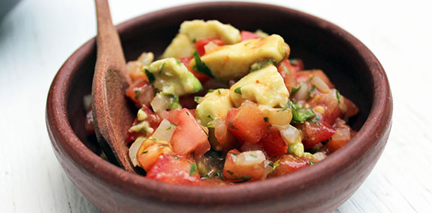

Pebre Tropical

Descripción
El pebre Tropical es una variante del pebre que lo acerca al guacamole mexicano.
Ingredientes
 - 3 tomates pequeños.
- 3 tomates pequeños. - 1 cebolla mediana.
- 1 cebolla mediana. - Cilantro a gusto.
- Cilantro a gusto.- - Perejil a gusto.
 - 1 ají verde.
- 1 ají verde. - Jugo de 1 limón.
- Jugo de 1 limón. - 1 cda. de aceite vegetal.
- 1 cda. de aceite vegetal. - Sal gruesa a gusto
- Sal gruesa a gusto- - 1 Palta sabrosa
Preparacion
- Pica la cebolla en cubitos y déjalas en un bowl.
- Corta los tomates en cuatro partes, (tú decides si los dejas con o sin cáscara) quítales las semillas y pícalos en cubitos. Agrégalos al bowl.
- Mezcla muy bien el tomate y la cebolla con ayuda de una cuchara, de manera que el tomate comience a soltar su jugo y su acidez.
- Pica un poco de perejil y un poco de cilantro en una tabla, y luego agrégalos al bowl. Revuelve para integrarlo completamente.
- Pica la palta en cubitos, y agrégala al bowl.
- Corta el ají por la mitad y quítale las semillas, luego pícalo en cubitos. Agrégalo de a poco en el bowl, probando constantemente para que no quede tan picante si no lo deseas.
- Agrega un chorrito de aceite, luego el jugo de limón y la sal a gusto. Revuelve.
- Deja reposar tu pebre de 20 a 30 minutos y ya está listo para acompañar tus choripanes, sopaipillas o lo que tú decidas.